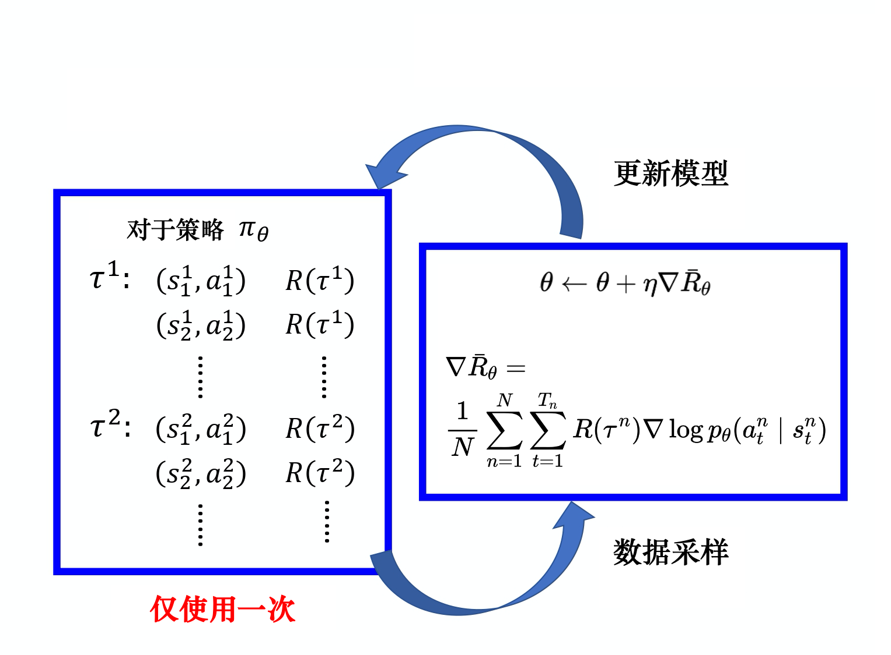
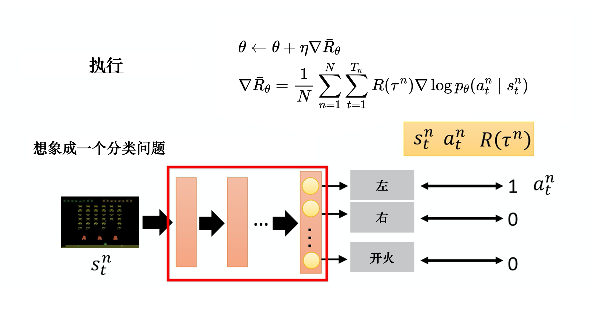
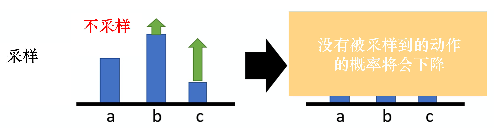
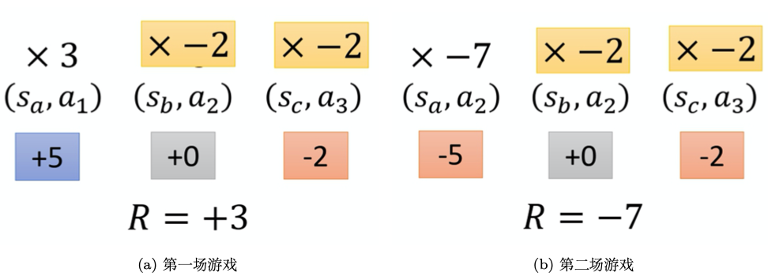

:::info
学习自李宏毅与蘑菇书。蘑菇书链接：蘑菇书EasyRL (datawhalechina.github.io)
搭配李宏毅的强化学习课程使用最佳。
这篇博文内容结合了自己的理解，不可避免地会存在不当，欢迎指正。
:::
[情景定义]{.rainbow}
智能体Actor、环境Environment与奖励Reward。在后面的内容中，你都可以将智能体理解为玩游戏的机器人，将环境理解为游戏主机，奖励理解为机器人玩游戏干掉怪兽得到的分数。
[策略梯度算法（Policy gradient Algorithm）]{.rainbow}
智能体通常作为Actor，在 ++策略++ 不断调整与指引下使得其在环境重获取到最大的奖励。策略在具体的实现上，现代强化学习通常用网络替代之。在前面的比喻中，你可以将策略理解为机器人取得高分的方法和手段。
++符号定义++
| 符号 | 释义 |
|---|---|
| $t$ | 同一时间下的某个状态 |
| $T$ | 某个轨迹下的所有状态数 |
| $a_t$ | 某个状态下智能体的动作 |
| $s_t$ | 某个状态下的环境 |
| $\theta$ | 智能体的策略模型参数 |
| $r_t$ | 某个状态下智能体采取动作后的奖励 |
| $\tau_i$ | 某次轨迹：所有状态的环境与动作的组合。$\tau=\{s_1,a_1,s_2,a_2,…s_t,a_t\}$ |
| $p$ | 概率 |
| $R$ | 总奖励 |
++手推策略梯度公式++
给定智能体Actor的参数$\theta$，可以计算轨迹$\tau$的发生的概率：
$p_{\theta}(a_1|s_1)$是策略里面的网络参数$\theta$决定的、观察到环境$s_1$后采取的动作概率。因此策略网络的输出是一个分布，是智能体采取动作的概率分布。$p(s_2|s_1,a_1)$是环境根据前一个环境的状态和智能体的动作给出的下一个环境状态，通常是环境内部的规则决定。
一个轨迹$\tau$会在某个时刻终止，其内部的每一个$s_t$和$a_t$的组合均能够产生对应的奖励$r_t$。所以，所有的组合能够得到一个关于这个轨迹的总奖励$R(\tau)$。
我们的目的就是要调整策略网络的参数$\theta$使得总奖励$R(\tau)$越大越好。因此，$R(\tau)$是一个随机的变量，我们可以计算$R(\tau)$：
当策略参数$\theta$给定，那么在这组参数上一定有一个关于轨迹的分布$p_{\theta}(\tau)$，智能体的多次尝试都是一个轨迹。对于所有的轨迹$\tau_i$，存在总奖励$\overline{R}_{\theta}$的期望值为：
为了让 ++期望奖励++ 越大越好，要进行 ++梯度上升++ 。所以要计算期望奖励关于策略参数$\theta$的梯度：
因此有：
但是在实际上，我们是无法直接和准确地求期望值$\mathbb{E}_{\tau \sim p_{\theta}(\tau)}[R(\tau)\nabla logp_{\theta}(\tau)]$的。但是我们可以通过采样N个$\tau$，然后计算$R(\tau)\nabla logp_{\theta}(\tau)$的N个和，来近似地得到这个期望：
得到最后一行的原因，是因为$\nabla log p_{\theta}(\tau^n)$可以被展开：
因为，$p(s_1)$和$p(s_{t+1}|s_t,a_t)$来自环境，与智能体的策略参数$\theta$无关，因此第一项和第三项为0，原式化简：
++训练思路++
现在整理一下思路。在给出一个初始策略参数$\theta$的情况下，经过训练，我们要得到一个不错的策略参数$\theta$，使得智能体在多个轨迹下得到的总奖励$\overline{R}_{\theta}$最大化。如何优化这个$\theta$呢？我们可以通过梯度上升法优化这个$\theta$，使得当$s_t$状态下执行$a_t$导致$R(\tau)$增大时增加在$s_t$下执行$a_t$的概率，反之减小这个概率：
根据公式1.4和公式1.5，我们知道优化$\theta$的关键在于求出$\nabla \overline{R}_{\theta}$，与$\nabla \overline{R}_{\theta}$有关的是$s_t^n$、$a_t^n$和$\tau^n$。所以我们要采集这些数据：
$\tau$的采集量是人为设定的，采集完一次后，会获得多组$\tau$的数据，然后使用公式1.4和公式1.5一次性更新模型：

++直观理解++
如何直观理解公式1.4？既然我们要通过求出$\nabla \overline{R}_{\theta}$来得到$\theta$的更新值，就不得不依赖反向传播得到梯度。你可以想象这样一个场景：智能体在玩一个游戏，控制一个飞机射击外星人，它的策略$\theta$是智能体内部的网络NN（Neural Network），在游戏过程中保持不变（游戏过程就是在采样若干组轨迹的s，a，R()对），智能体看到场景$s$，送给策略网络NN计算出要做的动作$a$的概率。如，向左移动的概率，向右移动的概率，开火的概率，所以这本质上是一个分类问题。

通常在训练过程中，我们需要智能体根据当前场景做出的动作是人为指定的，也就是说对于某个轨迹$\tau$的一个特定的$s$有个Ground-Truth，这个Ground-Truth就是在这个特定场景应该做出的动作$a$。比如，在某个场景$s_t$下，我们想要智能体向左，于是标签就是[1, 0, 0]。智能体将$s_t$作为策略网络$\theta$的输入，估计出向左的概率要尽可能接近1，即$p_{\theta}(a_t|s_t)$要尽可能接近1。
所以，在采样过程中，大量的$s_t^n$计算出大量的$p_{\theta}(a_t|s_t)$，那么根据每个$s_t$的标签，就能够计算一个交叉熵损失（cross entropy loss），最小化交叉熵损失就是在最大化似然：
所以，在训练过程中，最小化交叉熵损失，实际上在最大化某个轨迹的预测值的和。观察上面的式子，有没有发现在最小化损失，实际上在最大化$\nabla \overline{R}_{\theta}$。
在计算出损失后，通过反向传播，可以直接计算出$\nabla \overline{R}_{\theta}$的值，因此就能更新参数$\theta$了。
++实现上的一些技巧++
++添加基线++{.dot}
我们总是希望，对于某一给定的状态$s$采取动作$a$后，整场游戏$\tau$获得的奖励是正的，我们就增加$(s,a)$的概率。如果这个给定的状态$s$采取的动作$a$使得最后整场游戏$\tau$的奖励是负的，我们就减小$(s,a)$的概率。
理想情况是这样，现实是虽然这些动作对整场游戏$\tau$的奖励贡献有大有小，但整场游戏下来的奖励总是非负的，有的动作采取后得到了20分，有的动作采取后得到0分。这种情况下，一场游戏的奖励$R(\tau)$总是正的，最低也只是0，而且要求提升贡献度大的动作的概率，降低贡献度低的动作的概率。
另外一个现实是，由于本质上一个轨迹$\tau$只是在轨迹空间$p_\theta(\tau)$的一个采样，所以采样的数量较少时，一些动作可能未被采样到。那么相较于其他被采样到的动作而言，这个未被采样到的动作的概率就会被下降。这并不意味着这个未被采样到的动作贡献更小，仅仅只是未被采样到而已。相反，贡献度低的动作因为奖励总是正的、经常被采样到，所以概率提升地比未被采样、但贡献度高的动作幅度大。这就导致了不公平的出现。

奖励总是正的，就会导致丈量动作的贡献度相较于奖励有正有负而更加困难。除此之外，还引出了概率提升膨胀的问题，未被采样到的动作的概率不升反降，而其他采样到的动作因为奖励总是正的而概率得到很大幅度的提升。
为了解决这个问题，可以把奖励减去一个基线b：
此时总奖励就是$R(\tau^n) - b$。我们可以令$b≈E[R(\tau)]$，也就是说，我们在训练中不断地将$R(\tau)$的值记录下来，然后不断地记录$R(\tau)$的平均值，将这个平均值当作$b$来使用。这样一来，总奖励$R(\tau^n) - b$就会有正有负。
++分配合适的分数++{.dot}
观察公式1.5，只要在同一场游戏里（同一轨迹），所有的动作-状态对都要使用同样的奖励权重进行加权。也就是说，对于$(a_1^1,s_1^1),(a_2^1,s_2^1),(a_3^1,s_3^1),…,(a_T^1,s_T^1)$都使用$R(\tau^1)-b$进行加权，当$n=2$时同理。
这是不公平的，在蘑菇书中结合例子解释的非常深入浅出。简单来说就是，一场游戏的结果是好的，并不意味着每一个采取的动作都是好的。相反，若是整场游戏的结果不好，并不代表每一个动作都是不好的。
一种解决办法是，计算某个动作状态对的奖励权重时，不把整场游戏的奖励加起来，而是只计算从这个动作执行以后到整场游戏结束时得到的奖励。这样做是因为这个动作执行之前发生的事情是与这个动作没有关系的，所以执行当前这个动作之前所获得的所有奖励都不能算作是当前这个动作的贡献。将执行这个动作后获得所有奖励加起来，才算做这个动作真正的贡献。

比如，这张图$(s_a,a_1)$的权重是$(+5+0-2)=+3$，$(s_b,a_2)$的权重是$(+0-2)=-2$。即使是第二场游戏也是如此规律。
于是，重写公式1.5：
原来的权重是整场游戏的奖励的总和，现在改成从某个时刻$t$开始，假设这个动作是在开$t$始执行的，从$t$一直到游戏结束所有奖励的总和才能代表这个动作的好坏。
进一步，我们可以为未来的奖励做折扣，继续改写公式1.6：
为什么为未来时刻的奖励乘一个系数做折扣？因为当前时刻动作对下一时刻影响较大，但是随着时间推移，到某一时刻$t$时所受那个动作影响就越来越小。可以取系数$\gamma=0.9或0.99 \in [0,1]$。例如，假设游戏有两个回合，我们在游戏的第二回合的某一个 $s_t$执行$a_t$得到+1分，在$s_{t+1}$执行$a_{t+1}$得到+3分，在$s_{t+2}$执行$a_{t+2}$得到−5分，第二回合结束。$a_t$的分数应该是：$1 + \gamma \times 3 + \gamma^2 \times (-5)$。
++优势函数与评论员++{.dot}
观察公式1.7。事实上，$b$通常是一个网络估计出来的，是一个网络的输出。而$\sum_{t’=t}^{T_n}{\gamma^{t’-t}r_{t’}^{n}} - b$这一项通常简写为$A^\theta(s_t,a_t)$，被称为优势函数。此时，公式1.7又可以写成：
这个优势函数也通常可以被一个网络估计出来，这个网络被称为评论员。优势函数的意义是，在某个特定状态$s_t$下采取动作$a_t$，相较于其他可能执行的动作，$a_t$有多好。这个优势函数作为权重反映了动作相对的好，而不是绝对的好。